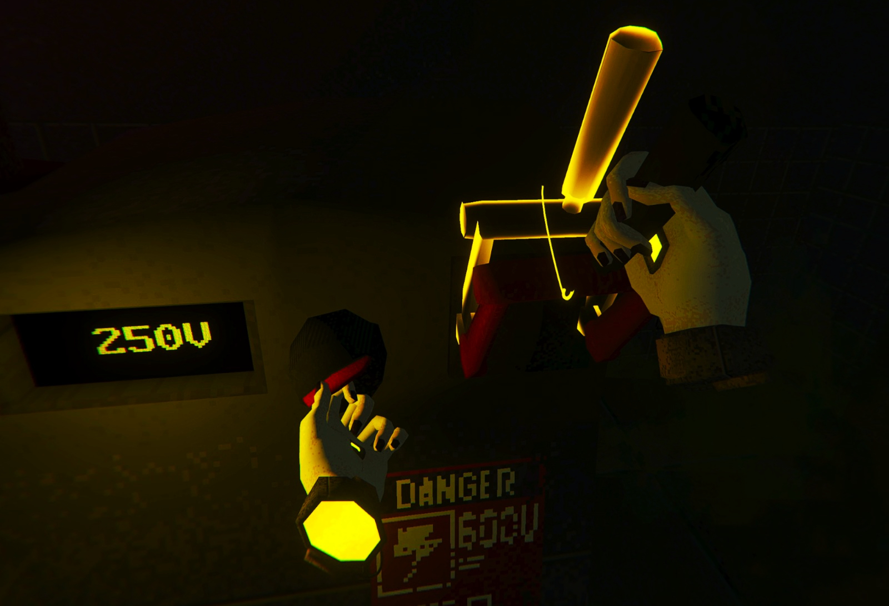
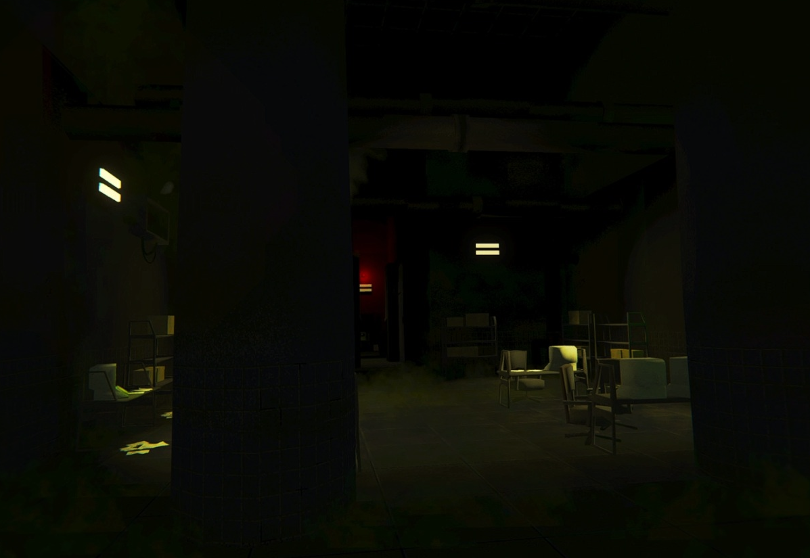

EgoFractum is a VR game developed as a final project for my bachelor's degree in Informatics and Multimedia Engineering at ISEL. The game is a puzzle-based atmospheric experience that explores different ways of interacting with a virtual environment, using the player's body and mind to solve challenges and progress through the game. The project was developed in Unity and C#, with a focus on creating an immersive and engaging experience for players.


Systems
To persist the player's progress, I implemented a save system that tracks and stores the player's position, as well as the positions and states of all interactable objects in the game. This allows players to pick up where they left off, even after closing the game or restarting their device.
The main bases of the interaction were built on OpenXR, a virtual reality API that allows developers to create immersive experiences for users.
Art
The art direction for EgoFractum focused on creating a unique visual style that would enhance the a tmospheric and immersive nature of the game. I worked to establish a dark and gritty aesthetic, using a combination of lighting, color, and environmental design to create a sense of tension and unease. The game's environments were designed to be self-contained and immersive.
Lighting and color was used to direct the player in a non intrusive way to make the player feel like they are finding things on their own.